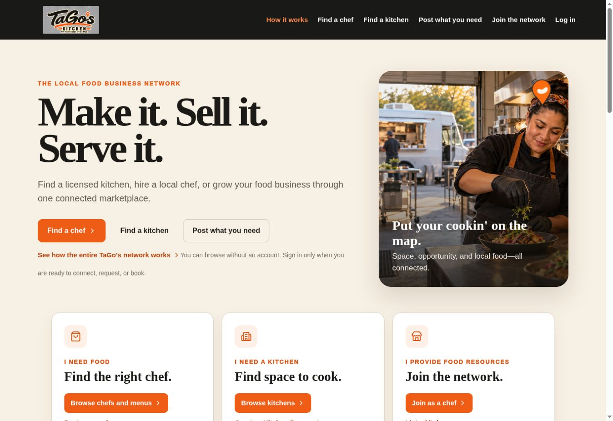
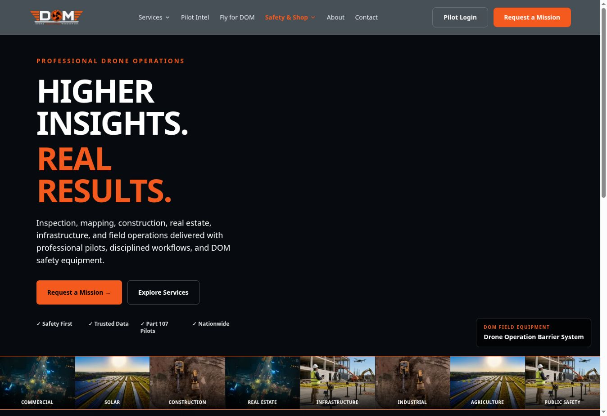

Workflow & document development
Map how work happens, clarify ownership and handoffs, and create useful forms, procedures, templates, and onboarding materials.
Workflow · Documents · Digital systems
AI Gents helps organizations understand how work happens, improve the process, and put practical tools in place—from forms and staff workflows to websites and portals.
What we do
Map how work happens, clarify ownership and handoffs, and create useful forms, procedures, templates, and onboarding materials.
Use AI where it helps teams examine information, draft options, or simplify repeatable work. Keep review and decisions with people.
Design and build clear public sites and practical staff or member portals, including event publishing, digital forms, and administration tools.
Connect appropriate services for email, payments, content updates, and records. Document who owns each account and how the pieces work together.
Field to Flow
Our Field to Flow method starts with the work people actually do. We identify decisions, handoffs, documents and exceptions, then design a better way to operate.
We interview the people involved, review existing forms and tools, and map one process. You receive a clear picture of the friction and a recommended first change.
Your team does the work with our guidance. We facilitate working sessions, review drafts, and help turn decisions into a usable workflow and document set.
We design and build the agreed workflow, documents, site or portal, connect suitable services, test it with users, and provide handover materials. Scope depends on the system.
For organizations with moving parts
We can redesign a public site, make events easier to update, replace paper or emailed forms with digital workflows, organize staff approvals, and connect suitable outside services for email, payments or print on demand. Each part is scoped to the actual need.
Selected work
Our own ventures and related projects show how we turn distinct ideas into usable sites and digital experiences.

Marketplace & operationsA digital home for a shared kitchen network, bringing together kitchen discovery and the workflows behind chefs, locations, and bookings.
Visit site ↗
Service websiteA clear service presence for commercial drone work, with mission intake, service details, and operational information.
Visit site ↗Start a conversation
A short inquiry is enough to begin. We will discuss the work, define a practical first step, and scope any further engagement together.
Speak with an AI Gent